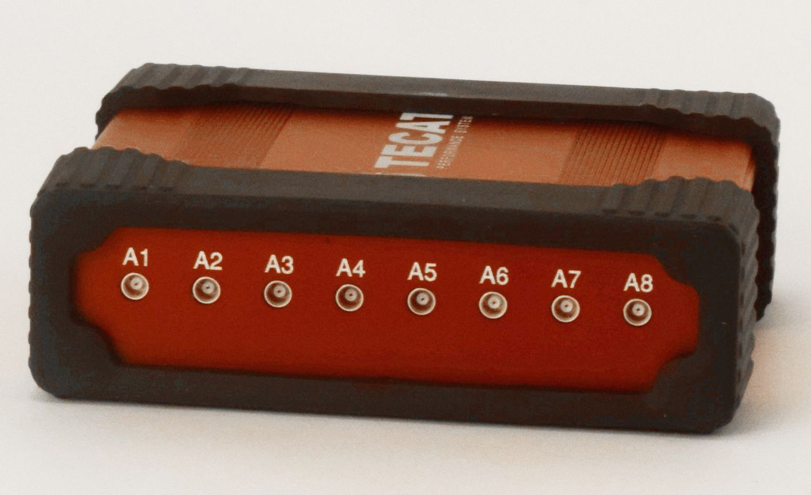
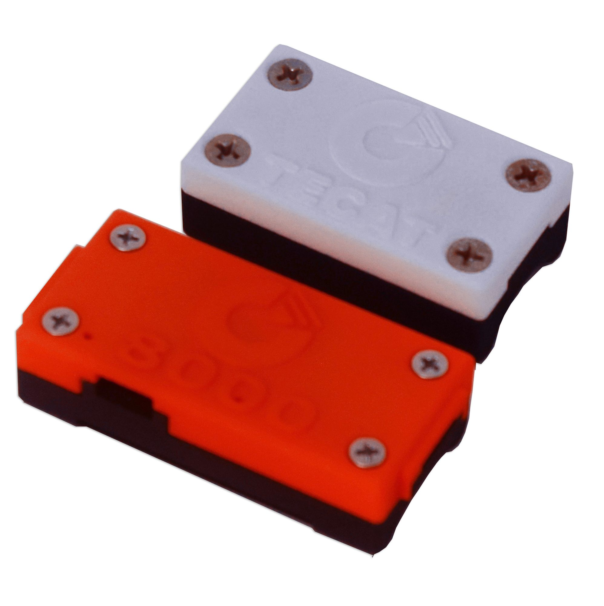

Wireless dual-channel strain system
TECAT 468 Dual Channel
Two-channel wireless strain system for torque and thrust together, bending, and low-strain structures.
- strain channels
- 2
- sampling versions
- 4, 6, or 8 kHz
- radio range
- Up to 1,000 m
- typical sensitivity
- ±0.04% FSR



Configurations
| Sampling rate |
|
|---|---|
| Base unit |
|
VERIFY The TECAT 468 lineup is still being finalized, including version names.
Overview
The TECAT 468 Dual Channel reads two strain gage bridges from one remote unit, so a single installation measures two loads at once, such as torque and thrust on a propeller. It comes in 4,000, 6,000, and 8,000 Hz sampling versions, each with a choice of base unit: 4 analog outputs and a 30 m radio link, or 8 analog outputs and a 1,000 m radio link.
What it measures
- Strain on two full-bridge strain gage inputs (torque, thrust, bending)
- Torsional vibration
- 3-axis acceleration, optional, ±16 g or ±400 g
Features
- Two external strain gage inputs measure two loads at once on a rotating shaft, such as torque and axial load or two components of bending.
- At 8 kHz the standard 400 mAh battery runs for up to 25 hours.
- The radio link reaches 1,000 m line of sight with the 8-output base unit and 30 m with the 4-output base unit.
- Four or eight analog output channels, depending on the base unit, each defined in TECAT Data Viewer, feed your DAQ directly.
- The remote transceiver stores up to 30,000 samples on a trigger, so it captures high-speed events without a PC connection for download later.
- On the 8-output base unit, a rotary switch selects the RF channel.
- An 18-bit A/D converter, two shunt calibration legs, and digital polarity reversal and zero are built in.
- The system installs without altering the part under test and can be removed.
Specifications
VERIFY Values below come from the current dual-channel hardware. Engineering to confirm them for the TECAT 468.
| Remote unit | |
|---|---|
| Sensor input | 2 external inputs, full Wheatstone bridge, 350 Ω strain gage or higher |
| Maximum sampling rate | 4,000, 6,000, or 8,000 Hz, by version |
| Measurement sensitivity | ±0.04% FSR typical; ±0.025% FSR optimized (digital output; optimized at 1,000 Hz, oversampling 32, packet size 2) |
| A/D converter | 18 bit (transmitted data 16 bit) |
| Bridge excitation | 2.50 V DC at 10 mA maximum, pulsed to the sensor |
| Differential input range | Factory selectable: ±15 mV, ±30 mV, or ±60 mV |
| Gain | User selectable: 1×, 2×, 4×, 8×, 16× |
| Digital offset | User selectable: ±100% full scale |
| Oversampling | 1×, 2×, 4×, 8×, 16×, 32× |
| Calibration | 2 independent shunt calibration legs (signal + and signal − to ground through 100 kΩ); digital polarity reversal; digital signal zero |
| Accelerometer | Optional 3-axis: ±16 g or ±400 g |
| Remote data logging | Up to 30,000 samples, with triggering |
| Power supply | 3 V DC to 6 V DC, 6 V DC absolute maximum |
| Sensor driver current | 10 mA absolute maximum |
| Battery | 3.7 V single-cell Li-Poly: 400 mAh standard; 850 mAh or 1,000 mAh optional |
| Battery life | Up to 25 hours at 8 kHz on the standard 400 mAh battery |
| Dimensions | 36 mm × 23 mm × 4 mm board without tabs and connectors; 45 mm × 23 mm × 6 mm with mounting tabs |
| Mass | 6.5 g transceiver with epoxy coating; 9.0 g for the 400 mAh battery |
| Operating temperature | −40 °C to +85 °C |
| Radio link | |
| Carrier | 2.45 GHz direct sequence spread spectrum, 2.405 GHz to 2.480 GHz, license free worldwide |
| RF channels | 16, selected by rotary switch on the base unit |
| Packet standard | IEEE 802.15.4 capable, open communication architecture |
| Range | 30 m line of sight with the 4-output base unit; 1,000 m (3,281 ft) line of sight with the 8-output base unit |
| Base unit | |
| Host connection | USB, mounts as a COM port; up to 230,400 baud, 8 data bits, no parity, 1 stop bit |
| Analog outputs | 4 or 8 programmable channels by base unit, 0 V to 5 V (2.5 V nominal center) |
| Power supply | 4-output base: 5 V DC to 24 V DC unregulated, or USB. 8-output base: 12 V DC to 24 V DC unregulated |
| Software | |
| Software | TECAT Data Viewer, or user supplied |
| Functions | Configuration, calibration, live monitoring, data logging, remote logging and trigger setup, analog output assignment, strain calculator |
| Optional accessories | |
| Antenna cable with magnetic mount | 4.0 m (13 ft) |
| Antenna extension cable | 4.5 m (15 ft) or 6.0 m (20 ft) |
| Strain gage | 350 Ω full bridge |
| Additional battery | Li-Poly, 400 mAh or 850 mAh |
| Remote enclosures | Remote top and battery top covers |
How the system works
-
Remote unit
Mounts on the moving part. Holds the capture electronics, Micro-Measurements strain gages or thermocouples, the radio, and a long-life battery.
-
Base unit
Plugs into your PC by USB. Holds the antenna and receiver, with analog outputs that feed your data acquisition system.
-
TECAT Data Viewer
Software on the PC for setup, calibration, live monitoring, and recording.
Downloads
-
Remote Enclosures Data Sheet
One-page data sheet for the TECAT remote enclosures, listing shaft diameter ranges, heights, operating temperature, and maximum RPM by mounting method. Published under the earlier WISER name.


Ready to measure?
Tell us about the part and what you need to measure, and we'll follow up with a recommendation and a quote.